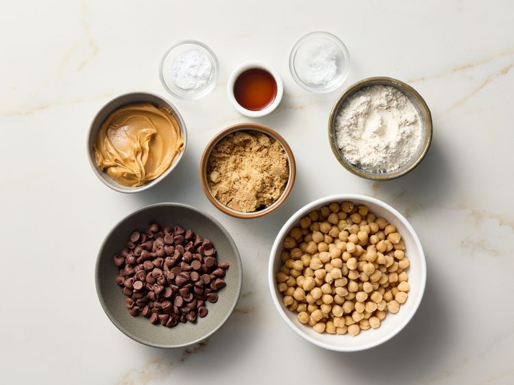
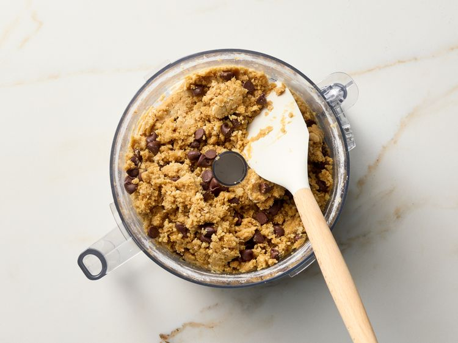
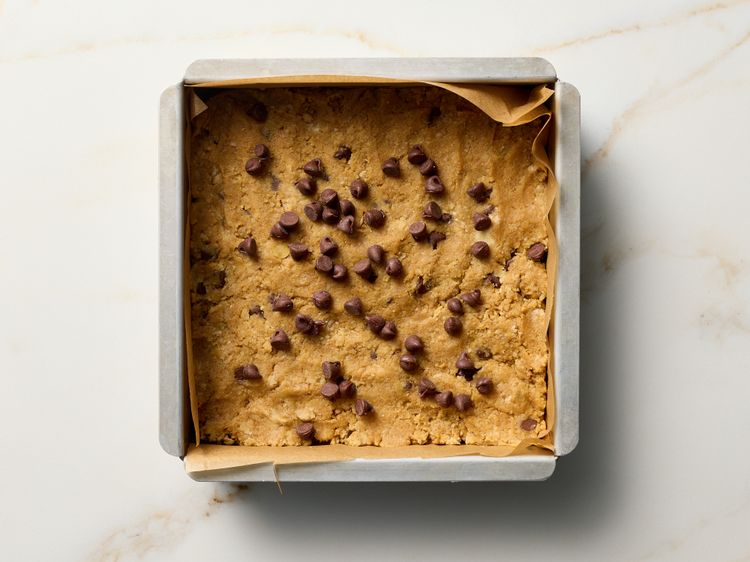
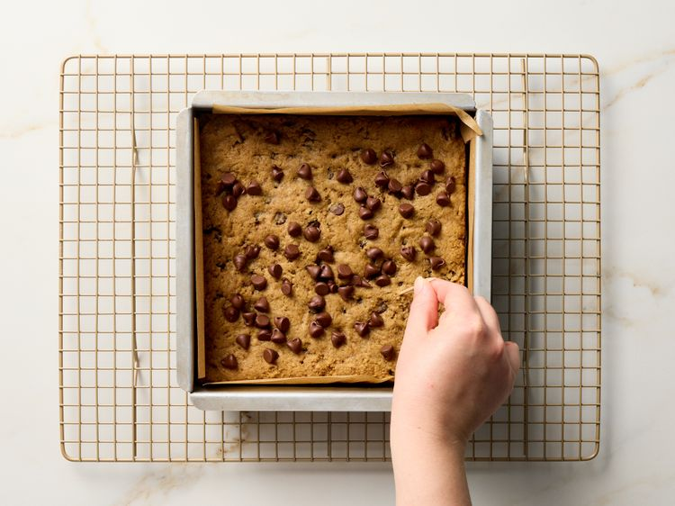
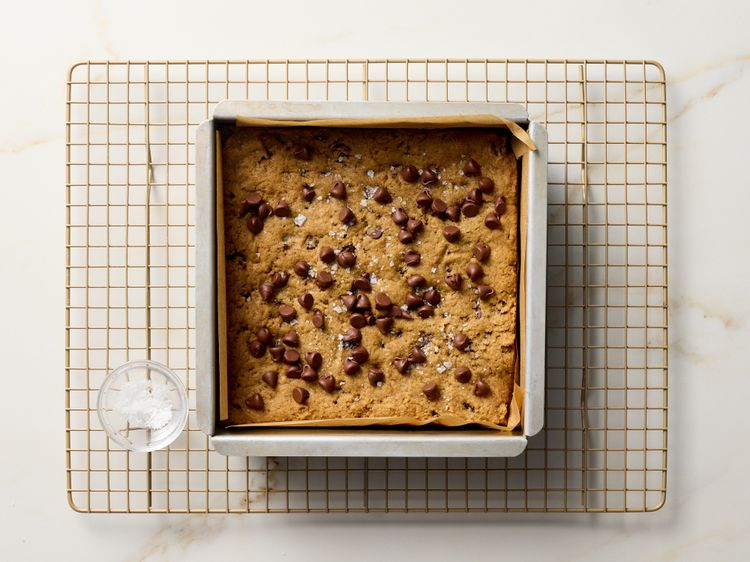
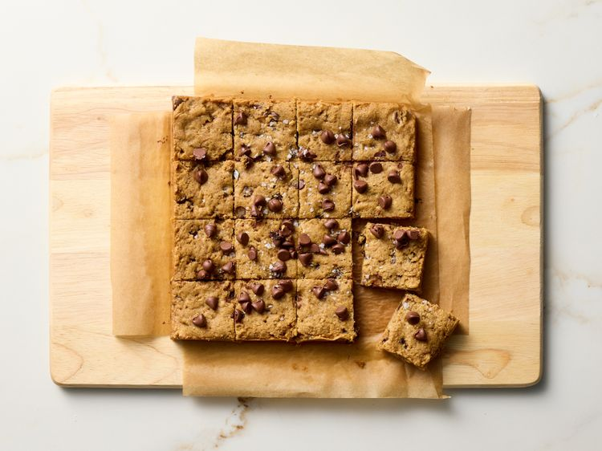

Noone can tell that these chickpea blondies have beans in them. The peanut butter and chocolate mask any bean flavor. A tasty way to sneak some fiber into your kids' diet.
Gather all ingredients. Preheat the oven to 350 degrees F (175 degrees C). Line an 8x8-inch baking pan with parchment paper.

Add chickpeas to a food processor. Process until nearly smooth, Add peanut butter, brown sugar, flour, vanilla, baking soda, and salt. Process until smooth. Mixture will be very thick. Stir in 1/2 cup chocolate chips.

Spread dough evenly in prepared pan. Top with remaining 2 tablespoons chocolate chips.

Bake until a toothpick inserted into the center comes out clean, 25 to 28 minutes.

Sprinkle with flaky sea salt

Cool in pan on a wire rack 30 minutes. Remove from pan and cool completely on the wire rack, 15 minutes. Cut in squares.

Back to Recipes